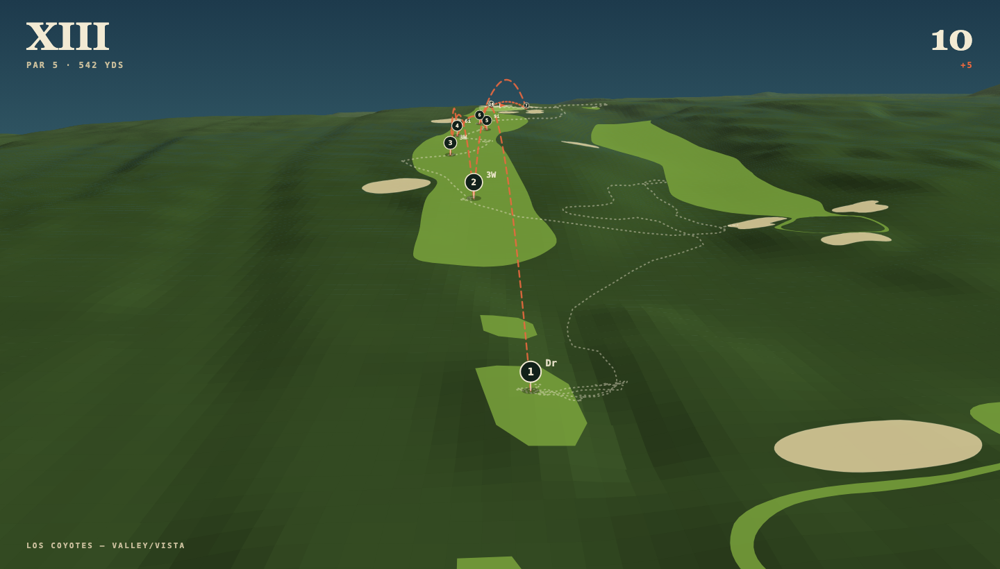
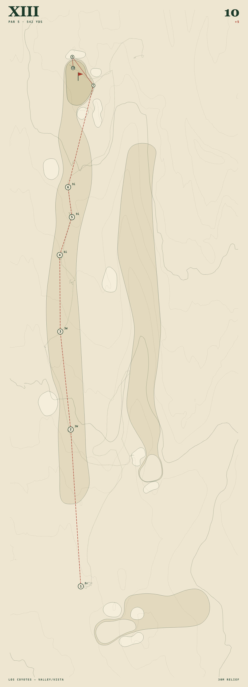
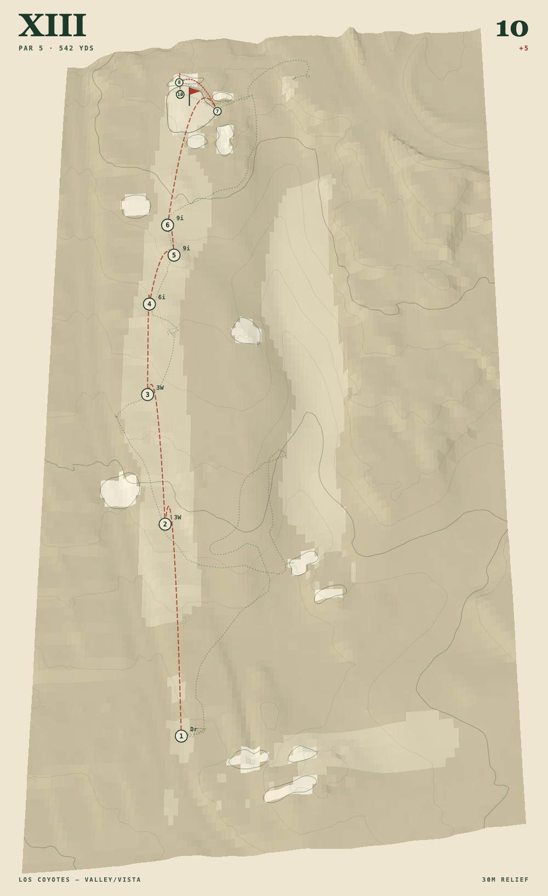
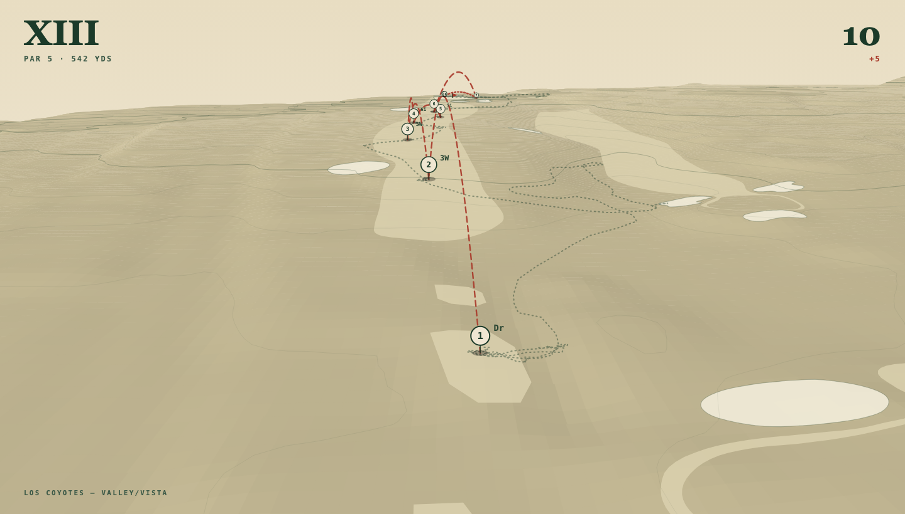

Hole XIII — rendering studies
A. Naturalistic flyover.
True perspective camera behind the tee. USGS 3DEP terrain, OSM mown surfaces, your ten shots with flight arcs, your walk track dotted.

B. Engraved plan.
Straight down. Contours every 2 m carry the elevation instead of a tilted camera. Closest to the existing app aesthetic.

C. Axonometric relief.
Tilted parchment survey — a middle position between the plan and the flyover.

D. Engraved flyover.
The logbook palette pushed into the perspective camera. Weakest of the four: the cover tones collapse into one beige.
